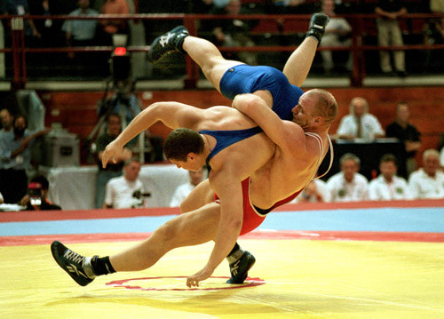

Правила греко-римской борьбы
Ковер и формат матча
Поединок проходит на ковре 12×12 м с центральным кругом диаметром 9 м. Матч состоит из двух периодов по 3 минуты с перерывом 30 секунд.

Весовые категории (мужчины)
- 55 кг
- 60 кг
- 67 кг
- 77 кг
- 87 кг
- 97 кг
- 130 кг
Запрещённые действия
Категорически нельзя:
- Хватать ниже пояса
- Использовать ноги для атаки или защиты
- Бить, душить, выкручивать суставы
- Тянуть за трико или волосы
Как начисляются очки?
| Действие |
Очки |
| Бросок с амплитудой (высокий) |
5 |
| Бросок средней амплитуды |
3 |
| Бросок малой амплитуды |
1–2 |
| Удержание в партере |
1–2 |
Виды победы
- Падение — оба плеча соперника касаются мата (мгновенная победа)
- Техническое превосходство — разница в 8 очков
- По очкам — в конце матча
- По фолу — три предупреждения сопернику
Судьи: один на ковре, двое боковых. Борцы выступают в красном или синем трико. Перед матчем — взвешивание и проверка формы.